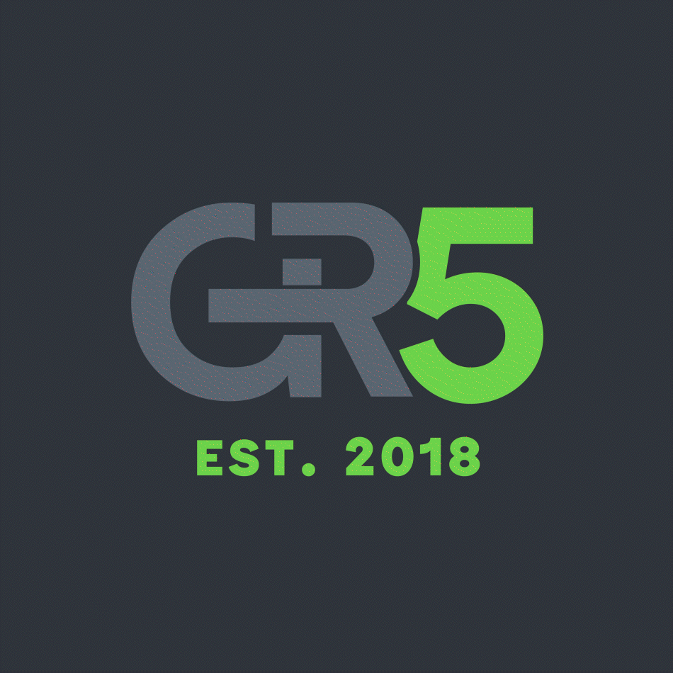
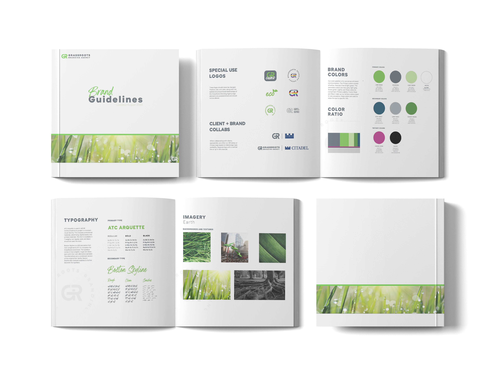
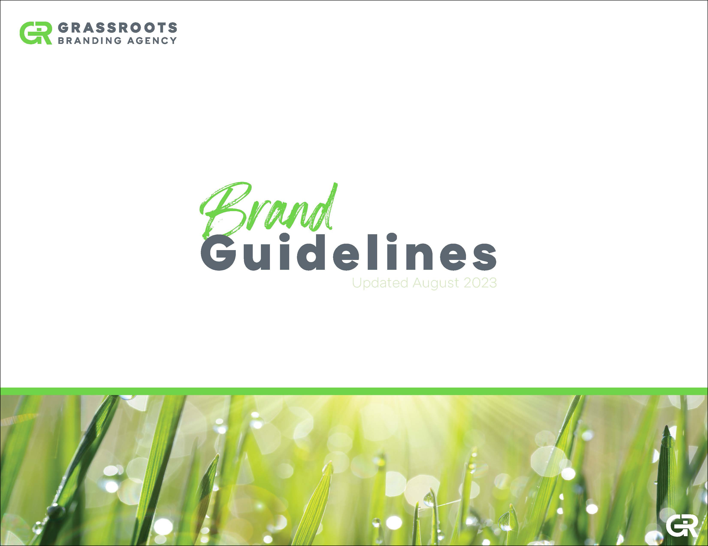
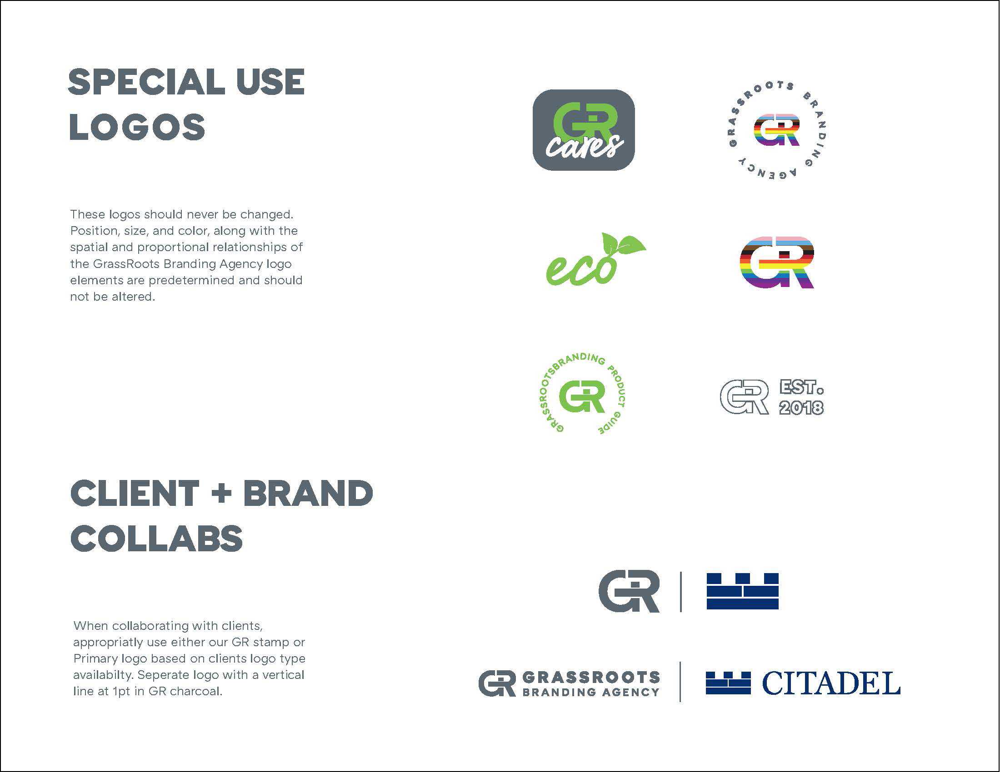
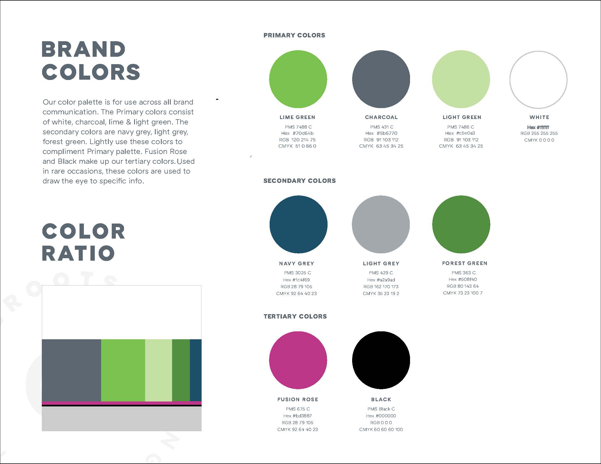
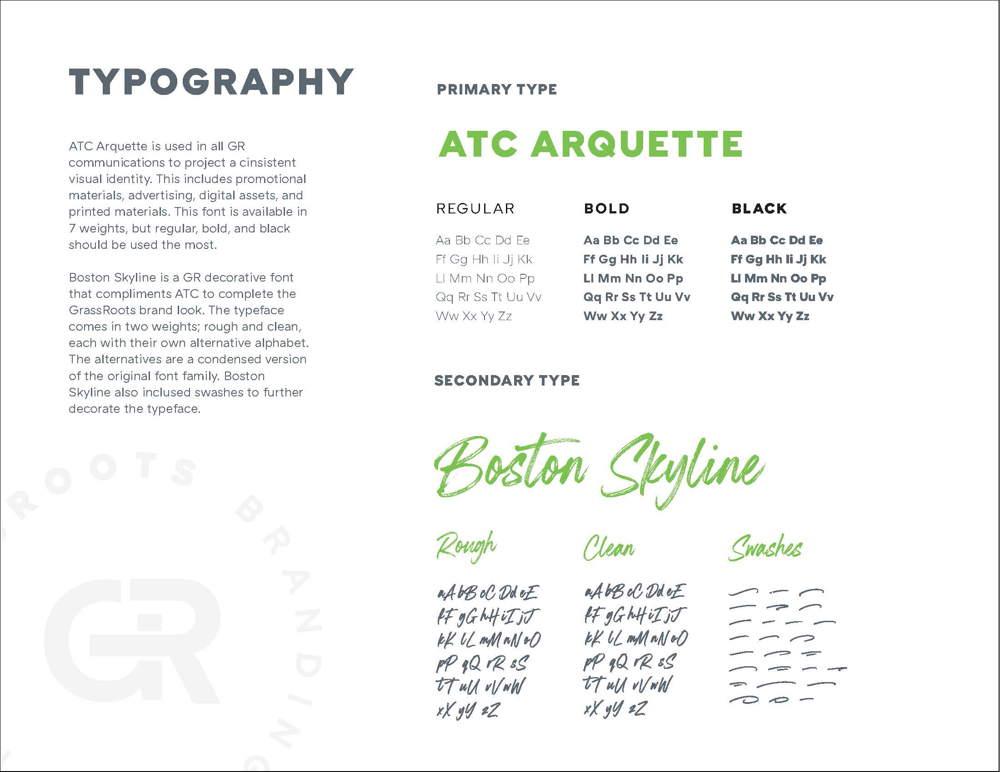
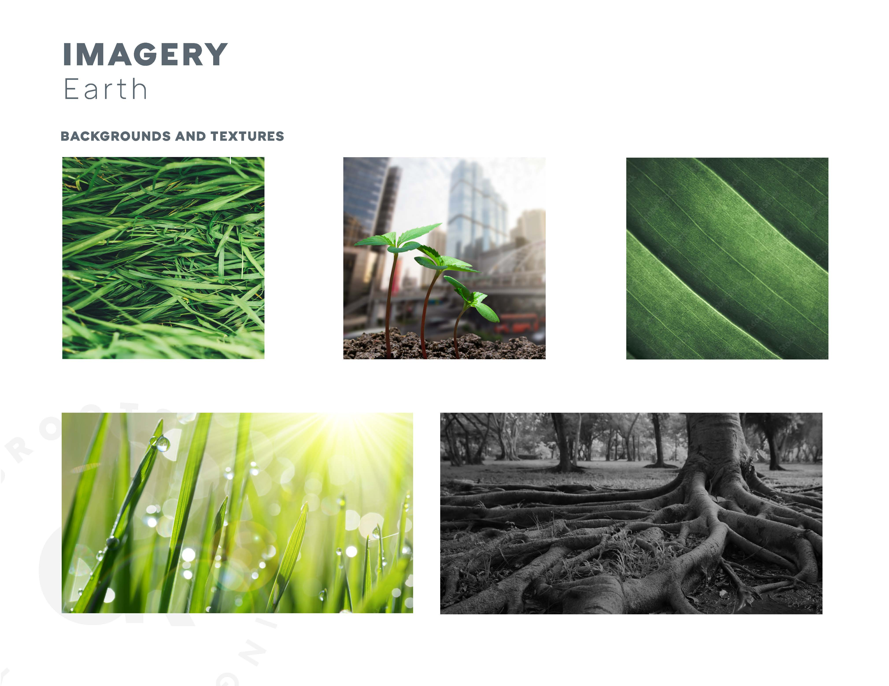
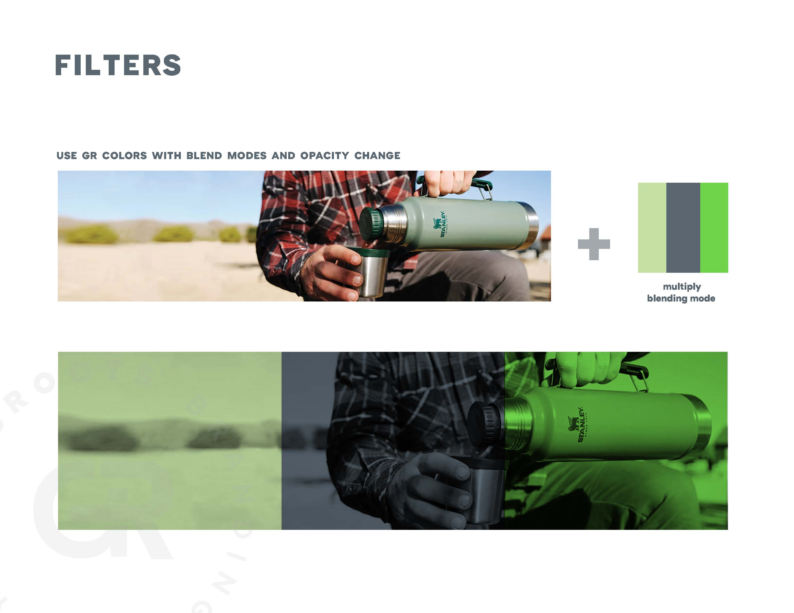

For GR Branding Agency, I spearheaded the agency's re-brand. The challenge was not to create a new brand but to expand and stay aligned with their established set of previously created assets and guidelines.
I did market research and due-diligence to create and add new assets that were high performing and aligned with current trends and styles. Logo variations, color palettes, type families, imagery, monetized effects and brand guidelines were among the assets delivered.







